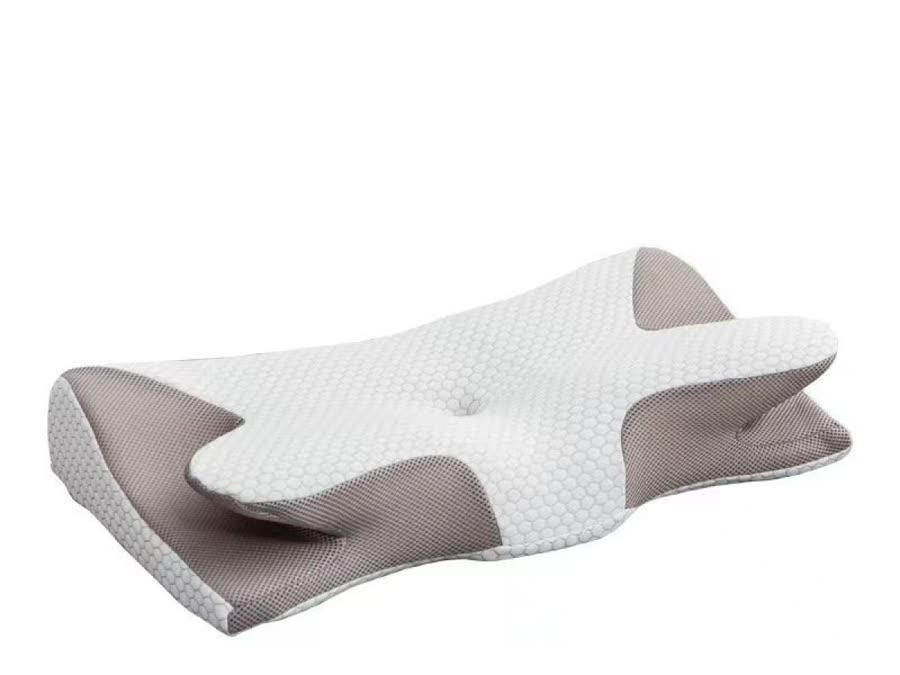

Confort de nuit • Design ergonomique
Coussin Cervical
Rafraîchissant
Un coussin ergonomique en mousse à mémoire de forme, avec découpes latérales pour les épaules et un creux central pour la tête. Revêtement rafraîchissant pour des nuits plus fraîches.
79,00 €
TVA incluse
Livraison offerte en France
Livraison estimée 12 à 20 jours ouvrés
Livraison estimée 12 à 20 jours ouvrés
Coloris
Bleu "Ice Silk"
Gris "Graphène"
Format unique : 64 × 35 × 12cm — forme ergonomique papillon
Quantité
1
Retours 30 jours
Livraison offerte
Paiement sécurisé
Confort été comme hiver